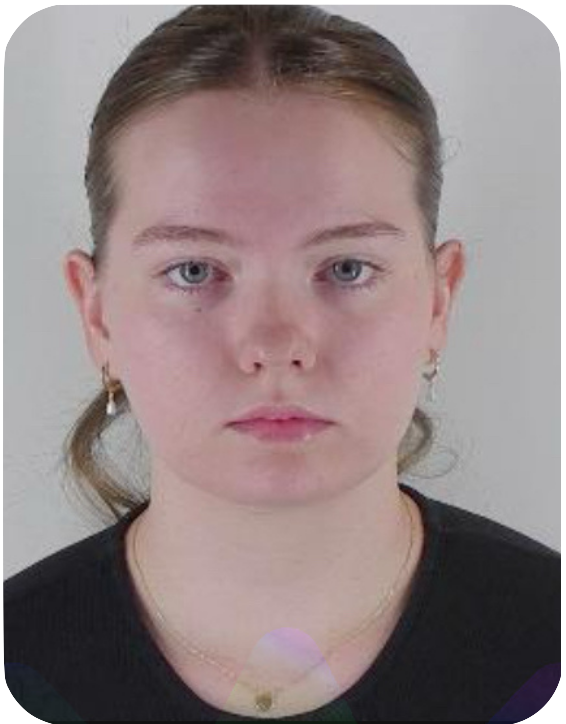
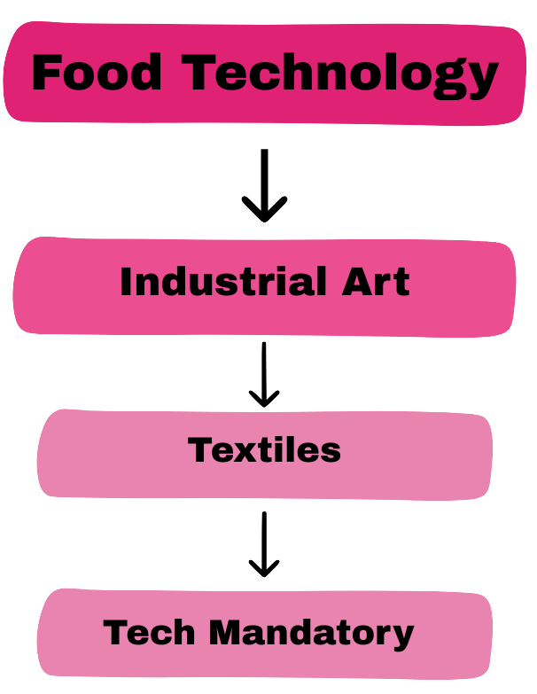

My Name is Gretel Salmon, I am currently a student at the Australian Catholic University.
This is me!
What do I teach?
Hi, my name is Gretel and I currently in my 3rd year completing a double degree at ACU, called Bachelor of Secondary Education/Bachelor of Arts in design innovations and Technologies. I have completed 3 pracs, at Georges River College Peakhurst, Holy Spirt College Lakemba and La Salle Catholic College Bankstown. Throughout my placement, I created lessons designed to engage all learners by incorporating a variety of teaching strategies—organising individual projects, designing games and learning centres, and delivering targeted small-group instruction. To assess student progress, I used both traditional assessments and alternative methods such as portfolios, rubrics, and performance-based tasks. I also participated in parent teacher interviews. Marked student assessments, helped students work on their personal projects. This experience deepened my commitment to inclusive, responsive teaching that supports every students learning journey.